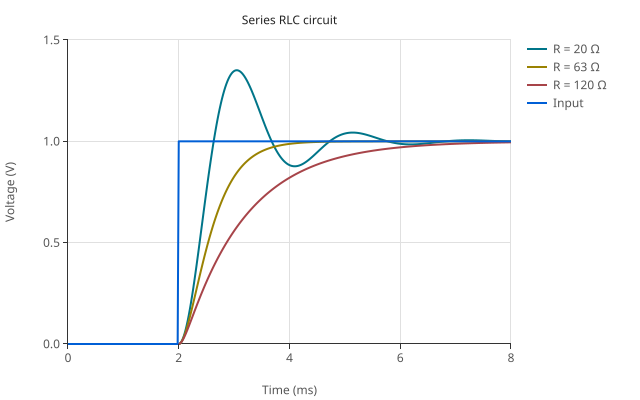

A second-order system with a damping ratio of 0.3:
let s = poly([0, 1])
let G = 1 / (s * s + 0.6 * s + 1)
print(G)
print(poles(G))
let t = linspace(0, 20, 201)
plot(t, step(G, t))Running it prints the transfer function, its poles and the step response:
1
---------------
s^2 + 0.6 s + 1
(-0.3 + 0.953939i, -0.3 - 0.953939i)
1.5 ┤⠀⠀⠀⠀⠀⠀⠀⠀⠀⠀⠀⠀⠀⠀⠀⠀⠀⠀⠀⠀⠀⠀⠀⠀⠀⠀⠀⠀⠀⠀⠀⠀⠀⠀⠀⠀⠀⠀⠀⠀⠀⠀⠀⠀⠀⠀⠀⠀⠀⠀⠀⠀⠀⠀⠀⠀⠀⠀⠀⠀
│⠀⠀⠀⠀⠀⠀⠀⠀⢠⠖⠲⢄⠀⠀⠀⠀⠀⠀⠀⠀⠀⠀⠀⠀⠀⠀⠀⠀⠀⠀⠀⠀⠀⠀⠀⠀⠀⠀⠀⠀⠀⠀⠀⠀⠀⠀⠀⠀⠀⠀⠀⠀⠀⠀⠀⠀⠀⠀⠀⠀
│⠀⠀⠀⠀⠀⠀⠀⢰⠁⠀⠀⠀⠣⡀⠀⠀⠀⠀⠀⠀⠀⠀⠀⠀⠀⠀⠀⠀⠀⠀⠀⠀⠀⠀⠀⠀⠀⠀⠀⠀⠀⠀⠀⠀⠀⠀⠀⠀⠀⠀⠀⠀⠀⠀⠀⠀⠀⠀⠀⠀
│⠀⠀⠀⠀⠀⠀⢀⠇⠀⠀⠀⠀⠀⠱⡀⠀⠀⠀⠀⠀⠀⠀⠀⠀⠀⠀⠀⠀⠀⠀⠀⠀⠀⠀⠀⠀⠀⠀⠀⠀⠀⠀⠀⠀⠀⠀⠀⠀⠀⠀⠀⠀⠀⠀⠀⠀⠀⠀⠀⠀
│⠀⠀⠀⠀⠀⠀⡎⠀⠀⠀⠀⠀⠀⠀⠈⢆⠀⠀⠀⠀⠀⠀⠀⠀⠀⠀⣀⡤⠤⠤⠤⠤⢤⣀⣀⡀⠀⠀⠀⠀⠀⠀⠀⠀⠀⠀⢀⣀⣀⣀⣀⣀⡀⠀⠀⠀⠀⠀⠀⠀
1.0 ┤⠀⠀⠀⠀⠀⢰⠁⠀⠀⠀⠀⠀⠀⠀⠀⠀⠳⣀⠀⠀⠀⠀⢀⡤⠞⠉⠀⠀⠀⠀⠀⠀⠀⠀⠀⠉⠉⠉⠉⠉⠉⠉⠉⠉⠉⠉⠉⠀⠀⠀⠀⠀⠈⠉⠉⠉⠉⠉⠉⠉
│⠀⠀⠀⠀⠀⡎⠀⠀⠀⠀⠀⠀⠀⠀⠀⠀⠀⠈⠑⠒⠒⠋⠁⠀⠀⠀⠀⠀⠀⠀⠀⠀⠀⠀⠀⠀⠀⠀⠀⠀⠀⠀⠀⠀⠀⠀⠀⠀⠀⠀⠀⠀⠀⠀⠀⠀⠀⠀⠀⠀
│⠀⠀⠀⠀⢠⠃⠀⠀⠀⠀⠀⠀⠀⠀⠀⠀⠀⠀⠀⠀⠀⠀⠀⠀⠀⠀⠀⠀⠀⠀⠀⠀⠀⠀⠀⠀⠀⠀⠀⠀⠀⠀⠀⠀⠀⠀⠀⠀⠀⠀⠀⠀⠀⠀⠀⠀⠀⠀⠀⠀
│⠀⠀⠀⠀⡎⠀⠀⠀⠀⠀⠀⠀⠀⠀⠀⠀⠀⠀⠀⠀⠀⠀⠀⠀⠀⠀⠀⠀⠀⠀⠀⠀⠀⠀⠀⠀⠀⠀⠀⠀⠀⠀⠀⠀⠀⠀⠀⠀⠀⠀⠀⠀⠀⠀⠀⠀⠀⠀⠀⠀
0.5 ┤⠀⠀⠀⢠⠃⠀⠀⠀⠀⠀⠀⠀⠀⠀⠀⠀⠀⠀⠀⠀⠀⠀⠀⠀⠀⠀⠀⠀⠀⠀⠀⠀⠀⠀⠀⠀⠀⠀⠀⠀⠀⠀⠀⠀⠀⠀⠀⠀⠀⠀⠀⠀⠀⠀⠀⠀⠀⠀⠀⠀
│⠀⠀⠀⡸⠀⠀⠀⠀⠀⠀⠀⠀⠀⠀⠀⠀⠀⠀⠀⠀⠀⠀⠀⠀⠀⠀⠀⠀⠀⠀⠀⠀⠀⠀⠀⠀⠀⠀⠀⠀⠀⠀⠀⠀⠀⠀⠀⠀⠀⠀⠀⠀⠀⠀⠀⠀⠀⠀⠀⠀
│⠀⠀⢠⠃⠀⠀⠀⠀⠀⠀⠀⠀⠀⠀⠀⠀⠀⠀⠀⠀⠀⠀⠀⠀⠀⠀⠀⠀⠀⠀⠀⠀⠀⠀⠀⠀⠀⠀⠀⠀⠀⠀⠀⠀⠀⠀⠀⠀⠀⠀⠀⠀⠀⠀⠀⠀⠀⠀⠀⠀
│⠀⠀⡸⠀⠀⠀⠀⠀⠀⠀⠀⠀⠀⠀⠀⠀⠀⠀⠀⠀⠀⠀⠀⠀⠀⠀⠀⠀⠀⠀⠀⠀⠀⠀⠀⠀⠀⠀⠀⠀⠀⠀⠀⠀⠀⠀⠀⠀⠀⠀⠀⠀⠀⠀⠀⠀⠀⠀⠀⠀
│⠀⢀⠇⠀⠀⠀⠀⠀⠀⠀⠀⠀⠀⠀⠀⠀⠀⠀⠀⠀⠀⠀⠀⠀⠀⠀⠀⠀⠀⠀⠀⠀⠀⠀⠀⠀⠀⠀⠀⠀⠀⠀⠀⠀⠀⠀⠀⠀⠀⠀⠀⠀⠀⠀⠀⠀⠀⠀⠀⠀
0.0 ┤⣠⠃⠀⠀⠀⠀⠀⠀⠀⠀⠀⠀⠀⠀⠀⠀⠀⠀⠀⠀⠀⠀⠀⠀⠀⠀⠀⠀⠀⠀⠀⠀⠀⠀⠀⠀⠀⠀⠀⠀⠀⠀⠀⠀⠀⠀⠀⠀⠀⠀⠀⠀⠀⠀⠀⠀⠀⠀⠀⠀
└┬──────────────┬──────────────┬─────────────┬──────────────┬
0 5 10 15 20
Plots can also be saved as SVG files with plot_svg,
or opened in your browser with show. Several series go
in a tuple, and keyword arguments add a title, labels and a legend.
Here, a series RLC circuit at three resistances:
let y = (response(20), response(63), response(120), u)
show(t*1e3, y, title="Series RLC circuit", xlabel="Time (ms)", ylabel="Voltage (V)",
names=("R = 20 Ω", "R = 63 Ω", "R = 120 Ω", "Input"))
The full example, with the damping ratio and the critical resistance:
examples/second_order.akt.
In the REPL
Polynomials and transfer functions are ordinary values, and they print as fractions.
aktua> let p = poly([1, 2, 3])
aktua> 1/p
1
---------------
3 s^2 + 2 s + 1
aktua> poles(1/p)
(-0.333333 + 0.471405i, -0.333333 - 0.471405i)
Vectors and matrices
Commas separate elements and semicolons separate rows.
Arithmetic works element by element, @ is the matrix
product and .T transposes.
aktua> let a = [1, 2, 3] aktua> let M = [1, 2, 3; 4, 5, 6] aktua> M @ a [14, 32] aktua> a.T * a [[1, 2, 3], [2, 4, 6], [3, 6, 9]]
Slices take rows, columns and ranges. Stops are exclusive, and negative numbers count from the end:
aktua> M[:, 0] [1, 4] aktua> M[1, -2:] [5, 6]
Transfer functions can be evaluated on whole vectors, so a frequency response is one line:
aktua> let s = poly([0, 1]) aktua> let G = 1 / (s + 1) aktua> let j = complex(0, 1) aktua> abs(G(j * [0.1, 1, 10])) [ 0.995037, 0.707107, 0.0995037]
Simulating your own dynamics
Not everything is a transfer function. A tank whose outflow follows
Torricelli's law, A dh/dt = q_in - k sqrt(h), is nonlinear,
but a Runge-Kutta step is a few lines of Aktua:
let A = 2 // Cross-section [m^2]
let k = 0.02 // Outflow coefficient [m^2.5/s]
let q_in = 0.01 // Inflow [m^3/s]
fn f(t, h) { (q_in - k * sqrt(h)) / A }
// One step of classic Runge-Kutta
fn rk4(f, t, y, dt) {
let k1 = f(t, y)
let k2 = f(t + dt/2, y + dt/2 * k1)
let k3 = f(t + dt/2, y + dt/2 * k2)
let k4 = f(t + dt, y + dt * k3)
y + dt/6 * (k1 + 2*k2 + 2*k3 + k4)
}
let t = linspace(0, 500, 501)
let h = zeros([len(t)])
for i in range(1, len(t)) {
h[i] = rk4(f, t[i-1], h[i-1], t[i] - t[i-1])
}
print("Final level: " + h[-1] + " m, steady state " + (q_in / k)^2 + " m")
plot(t, h)Final level: 0.248759 m, steady state 0.25 m
0.3 ┤⠀⠀⠀⠀⠀⠀⠀⠀⠀⠀⠀⠀⠀⠀⠀⠀⠀⠀⠀⠀⠀⠀⠀⠀⠀⠀⠀⠀⠀⠀⠀⠀⠀⠀⠀⠀⠀⠀⠀⠀⠀⠀⠀⠀⠀⠀⠀⠀⠀⠀⠀⠀⠀⠀⠀⠀⠀⠀⠀⠀
│⠀⠀⠀⠀⠀⠀⠀⠀⠀⠀⠀⠀⠀⠀⠀⠀⠀⠀⠀⠀⠀⠀⠀⠀⠀⠀⠀⠀⠀⠀⠀⠀⠀⠀⠀⠀⠀⠀⠀⠀⠀⠀⠀⠀⠀⠀⠀⠀⠀⠀⠀⠀⠀⠀⠀⠀⠀⠀⠀⠀
│⠀⠀⠀⠀⠀⠀⠀⠀⠀⠀⠀⠀⠀⠀⠀⠀⠀⠀⠀⠀⠀⠀⠀⠀⠀⠀⠀⠀⠀⠀⠀⠀⠀⠀⠀⠀⠀⣀⣀⣀⣀⣀⣀⣀⣀⣀⣀⣠⠤⠤⠤⠤⠤⠤⠤⠤⠤⠤⠤⠤
│⠀⠀⠀⠀⠀⠀⠀⠀⠀⠀⠀⠀⠀⠀⠀⠀⠀⠀⠀⠀⠀⠀⢀⣀⣀⠤⠤⠴⠒⠒⠒⠊⠉⠉⠉⠉⠉⠀⠀⠀⠀⠀⠀⠀⠀⠀⠀⠀⠀⠀⠀⠀⠀⠀⠀⠀⠀⠀⠀⠀
│⠀⠀⠀⠀⠀⠀⠀⠀⠀⠀⠀⠀⠀⠀⠀⠀⢀⣠⠤⠖⠚⠉⠉⠀⠀⠀⠀⠀⠀⠀⠀⠀⠀⠀⠀⠀⠀⠀⠀⠀⠀⠀⠀⠀⠀⠀⠀⠀⠀⠀⠀⠀⠀⠀⠀⠀⠀⠀⠀⠀
0.2 ┤⠀⠀⠀⠀⠀⠀⠀⠀⠀⠀⠀⠀⢀⡠⠔⠋⠉⠀⠀⠀⠀⠀⠀⠀⠀⠀⠀⠀⠀⠀⠀⠀⠀⠀⠀⠀⠀⠀⠀⠀⠀⠀⠀⠀⠀⠀⠀⠀⠀⠀⠀⠀⠀⠀⠀⠀⠀⠀⠀⠀
│⠀⠀⠀⠀⠀⠀⠀⠀⠀⠀⡠⠖⠉⠀⠀⠀⠀⠀⠀⠀⠀⠀⠀⠀⠀⠀⠀⠀⠀⠀⠀⠀⠀⠀⠀⠀⠀⠀⠀⠀⠀⠀⠀⠀⠀⠀⠀⠀⠀⠀⠀⠀⠀⠀⠀⠀⠀⠀⠀⠀
│⠀⠀⠀⠀⠀⠀⠀⢀⡴⠋⠀⠀⠀⠀⠀⠀⠀⠀⠀⠀⠀⠀⠀⠀⠀⠀⠀⠀⠀⠀⠀⠀⠀⠀⠀⠀⠀⠀⠀⠀⠀⠀⠀⠀⠀⠀⠀⠀⠀⠀⠀⠀⠀⠀⠀⠀⠀⠀⠀⠀
│⠀⠀⠀⠀⠀⠀⡴⠋⠀⠀⠀⠀⠀⠀⠀⠀⠀⠀⠀⠀⠀⠀⠀⠀⠀⠀⠀⠀⠀⠀⠀⠀⠀⠀⠀⠀⠀⠀⠀⠀⠀⠀⠀⠀⠀⠀⠀⠀⠀⠀⠀⠀⠀⠀⠀⠀⠀⠀⠀⠀
0.1 ┤⠀⠀⠀⠀⢀⠞⠀⠀⠀⠀⠀⠀⠀⠀⠀⠀⠀⠀⠀⠀⠀⠀⠀⠀⠀⠀⠀⠀⠀⠀⠀⠀⠀⠀⠀⠀⠀⠀⠀⠀⠀⠀⠀⠀⠀⠀⠀⠀⠀⠀⠀⠀⠀⠀⠀⠀⠀⠀⠀⠀
│⠀⠀⠀⣠⠋⠀⠀⠀⠀⠀⠀⠀⠀⠀⠀⠀⠀⠀⠀⠀⠀⠀⠀⠀⠀⠀⠀⠀⠀⠀⠀⠀⠀⠀⠀⠀⠀⠀⠀⠀⠀⠀⠀⠀⠀⠀⠀⠀⠀⠀⠀⠀⠀⠀⠀⠀⠀⠀⠀⠀
│⠀⠀⣰⠃⠀⠀⠀⠀⠀⠀⠀⠀⠀⠀⠀⠀⠀⠀⠀⠀⠀⠀⠀⠀⠀⠀⠀⠀⠀⠀⠀⠀⠀⠀⠀⠀⠀⠀⠀⠀⠀⠀⠀⠀⠀⠀⠀⠀⠀⠀⠀⠀⠀⠀⠀⠀⠀⠀⠀⠀
│⠀⢰⠃⠀⠀⠀⠀⠀⠀⠀⠀⠀⠀⠀⠀⠀⠀⠀⠀⠀⠀⠀⠀⠀⠀⠀⠀⠀⠀⠀⠀⠀⠀⠀⠀⠀⠀⠀⠀⠀⠀⠀⠀⠀⠀⠀⠀⠀⠀⠀⠀⠀⠀⠀⠀⠀⠀⠀⠀⠀
│⢠⠇⠀⠀⠀⠀⠀⠀⠀⠀⠀⠀⠀⠀⠀⠀⠀⠀⠀⠀⠀⠀⠀⠀⠀⠀⠀⠀⠀⠀⠀⠀⠀⠀⠀⠀⠀⠀⠀⠀⠀⠀⠀⠀⠀⠀⠀⠀⠀⠀⠀⠀⠀⠀⠀⠀⠀⠀⠀⠀
0.0 ┤⡎⠀⠀⠀⠀⠀⠀⠀⠀⠀⠀⠀⠀⠀⠀⠀⠀⠀⠀⠀⠀⠀⠀⠀⠀⠀⠀⠀⠀⠀⠀⠀⠀⠀⠀⠀⠀⠀⠀⠀⠀⠀⠀⠀⠀⠀⠀⠀⠀⠀⠀⠀⠀⠀⠀⠀⠀⠀⠀⠀
└┬───────────┬───────────┬──────────┬───────────┬───────────┬
0 100 200 300 400 500
The ode module has the same idea built in, written in C:
euler, rk4, and rk45, an adaptive
Dormand-Prince method. Each returns one row per time step:
import("ode")
fn f(t, s) { [s[1], -s[0]] } // x'' = -x, with s = [x, v]
let t = linspace(0, 100, 201)
let s = rk45(f, t, [1, 0], rtol=1e-8, atol=1e-10)
print("Error at t = 100: " + abs(s[-1, 0] - cos(100)))Error at t = 100: 9.0316e-08
What it has so far
- Polynomials and transfer functions, with arithmetic between them
- Poles, and impulse and step responses of LTI systems
- Discrete-time transfer functions, in
z - Real and complex numbers, with the usual math functions
- Vectors and matrices, with broadcasting, slicing, transposes and a matrix product
- Functions with default arguments, loops, conditionals, tuple unpacking and imports, enough to write your own ODE solvers
- Built-in ODE solvers: Euler, RK4 and adaptive Dormand-Prince (RK45)
- Line plots, with linear or log axes, drawn in the terminal with braille characters or saved as SVG files
- An interactive REPL, or scripts run from the command line
Aktua is experimental. Expect missing features, rough error messages and breaking changes.
Building it
You need a C compiler and make.
git clone https://github.com/marciorvneto/aktua
cd aktua
make
./build/aktua examples/leaky_tank.aktRun ./build/aktua with no arguments to start the REPL.